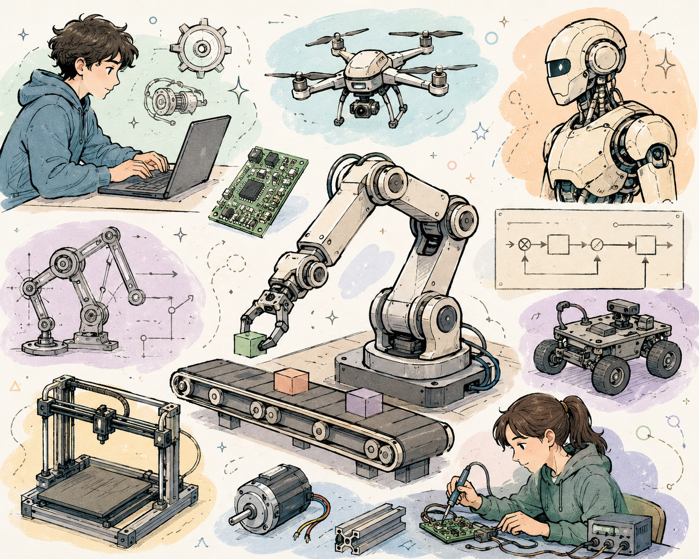
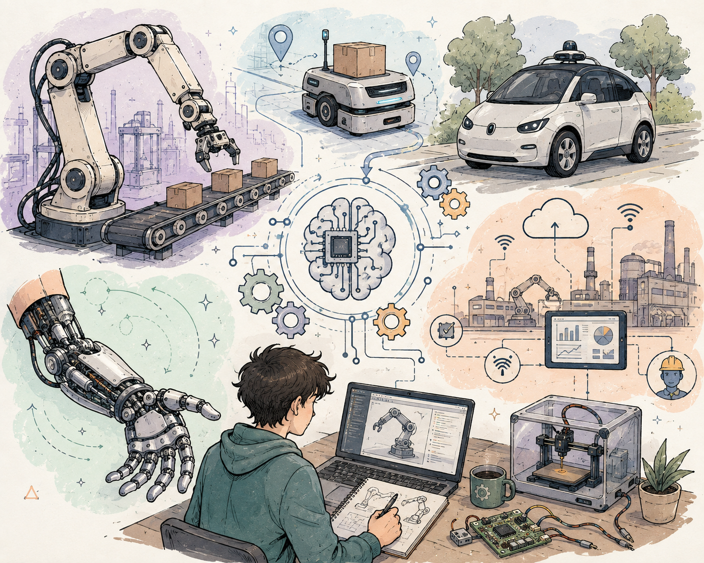
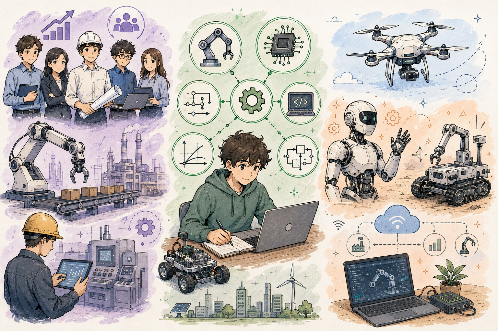

1
Actividad 1
Comprendiendo la Ingeniería presentada
1¿Cuál fue el programa de Ingeniería presentado en la sesión?
El programa presentado fue la Ingeniería Mecatrónica, una disciplina que integra la mecánica, la electrónica, la teoría de control y la informática con el objetivo de diseñar y fabricar sistemas inteligentes y automatizados, como robots, máquinas y procesos industriales.

2¿Cuál es el propósito o aporte principal de esta Ingeniería?
Su propósito principal es combinar la mecánica con la electrónica, el control y el software para crear sistemas inteligentes y automatizados. Permite desarrollar robots, líneas de producción automatizadas, vehículos autónomos, prótesis biónicas y soluciones de Industria 4.0 que hacen procesos más eficientes, seguros y precisos.

3Mencione tres beneficios o aspectos positivos de estudiar este programa
- Alta demanda laboral en robótica, automatización y manufactura avanzada.
- Formación multidisciplinaria que se adapta a muchas industrias.
- Permite crear proyectos innovadores e impactantes: robots, drones y sistemas inteligentes.

4¿Qué problema de la sociedad podría ayudar a solucionar un profesional de esta Ingeniería?
Puede ayudar a solucionar problemas como la falta de competitividad industrial, la seguridad laboral (reemplazando tareas peligrosas con robots), la optimización de recursos y energías renovables, la movilidad mediante vehículos autónomos y el acceso a tecnología médica como prótesis y equipos de rehabilitación.
Imagen 4
5¿Cuál fue el aspecto que más le llamó la atención? Explique por qué.
El aspecto que más me llamó la atención fue la robótica y la automatización, porque es impresionante ver cómo se combinan mecánica, electrónica y programación para crear máquinas inteligentes. Sin embargo, me di cuenta de que ese trabajo práctico con mecanismos y sistemas de control no es el área en la que realmente me visualizo para mi futuro profesional.
Imagen 5
2
Actividad 2
Perfil del futuro estudiante
Perfil general
| Aspecto | Respuesta |
|---|---|
| Intereses relacionados con el programa | Robótica, automatización, tecnología, mecánica, electrónica, programación y sistemas inteligentes. |
| Conocimientos o asignaturas importantes | Matemáticas, física, programación, diseño asistido (CAD), electrónica y mecánica de materiales. |
| Habilidades necesarias | Pensamiento lógico, resolución de problemas, programación, trabajo en equipo y análisis matemático. |
| Actitudes o valores importantes | Curiosidad, responsabilidad, creatividad, trabajo en equipo, persistencia e innovación. |
| Competencias que debería fortalecer | Programación, electrónica, diseño mecánico, control y manejo de herramientas de simulación. |
6¿Cuáles de las características anteriores considera que ya posee?
Considero que ya poseo pensamiento lógico, interés por la tecnología y la robótica, capacidad de razonamiento matemático y curiosidad. Además tengo facilidad para trabajar en equipo y ganas de aprender a construir y programar máquinas que resuelvan problemas reales.
Imagen 6
7¿Cuáles considera que debe fortalecer o desarrollar?
Debo fortalecer mis conocimientos en programación avanzada, profundizar en electrónica y diseño mecánico, y aprender a utilizar software de simulación y modelado 3D. También quiero desarrollar más mi capacidad de innovación y el trabajo en proyectos multidisciplinarios.
Imagen 7
8En una escala de 1 a 5, indique qué tanto se identifica con el perfil del estudiante de este programa
12345
Justificación:
Me identifico en un nivel 2 con el perfil. Si bien me interesa la programación y algo de la tecnología, la mecatrónica se enfoca mucho en la mecánica, la electrónica y el control industrial, que no son las áreas que más se alinean con mis intereses y habilidades actuales.
Imagen 8
3
Actividad 3
Campos de acción y oportunidades
9Mencione tres áreas o campos de trabajo en los que podría desempeñarse un profesional de esta Ingeniería
- Robótica industrial y de servicio.
- Automatización y control de procesos.
- Automatización industrial, manufactura y líneas de producción.
También podría trabajar en: sistemas automotrices, aeroespacial, biomedicina, energías renovables y desarrollo de sistemas embebidos.
Imagen 9
10Seleccione el área que le parece más interesante y explique por qué
El área que más me interesa es la robótica, porque me permite diseñar, construir y programar máquinas inteligentes capaces de realizar tareas complejas. Me fascina ver cómo un conjunto de piezas mecánicas, sensores y código puede convertirse en un robot con comportamiento autónomo.
Imagen 10
11¿Qué tipo de proyecto le gustaría desarrollar como profesional de esta Ingeniería?
No tengo un proyecto concreto en esta área. Si tuviera que elegir, tal vez un pequeño prototipo de automatización, pero lo reconozco como una actividad de interés general y no como el rumbo que me gustaría tomar como profesional, ya que me inclino más hacia otros campos.
Imagen 11
12¿Qué aporte podría realizar esta profesión al desarrollo de Colombia y al bienestar de la sociedad?
La Ingeniería Mecatrónica puede aportar al desarrollo de Colombia mediante la modernización de la industria, la automatización de procesos que aumente la productividad, el desarrollo de tecnología agrícola, soluciones de energías renovables y sistemas de salud con robótica médica. Esto genera empleo calificado y hace al país más competitivo e innovador.
Imagen 12
4
Actividad 4
Mi reflexión vocacional
13Después de conocer este programa, responda: ¿Me interesa estudiar esta Ingeniería?
Sí
✓ No
Tal vez
¿Por qué?
No, esta carrera no es la que quiero. Aunque respeto la mecatrónica y entiendo su importancia en la ingeniería, el enfoque en mecánica y control industrial no es lo que realmente me apasiona, así que preferiría orientar mi futuro profesional hacia otra área que sí se ajuste mejor a mis intereses.
Imagen 13
14¿Qué relación encuentra entre esta Ingeniería y sus intereses personales?
Encuentro poca relación con mis intereses. Si bien me gusta la tecnología y la programación, esa es solo una parte de la mecatrónica, que en realidad se apoya mucho en la mecánica y la electrónica de control. Esas áreas no son las que más me atraen, por lo que esta carrera no encaja del todo con lo que realmente quiero hacer.
Imagen 14
15Complete la siguiente frase
«Después de conocer la Ingeniería Mecatrónica, reconozco que es una carrera muy importante para la industria y con gran futuro, pero considero que no es la que más se ajusta a mis intereses, ya que mi mayor afinidad está en otras áreas de la tecnología.»
Imagen 15
16Valoración general al finalizar la sesión
Imagen 16